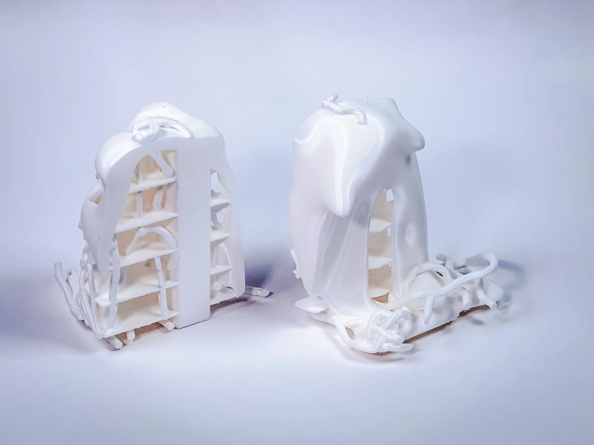
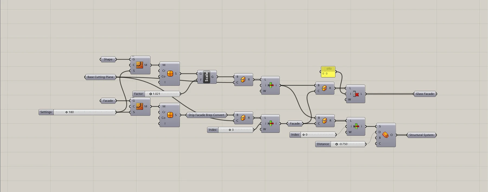
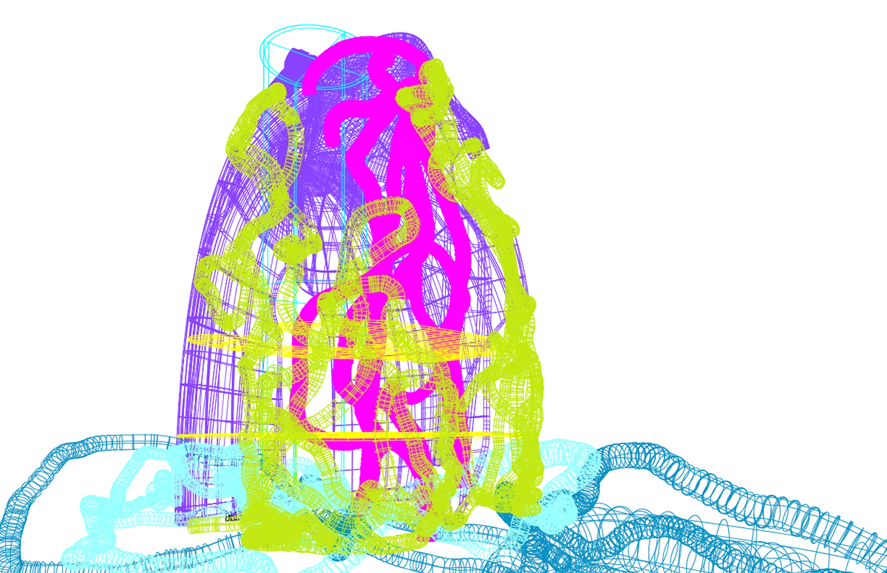
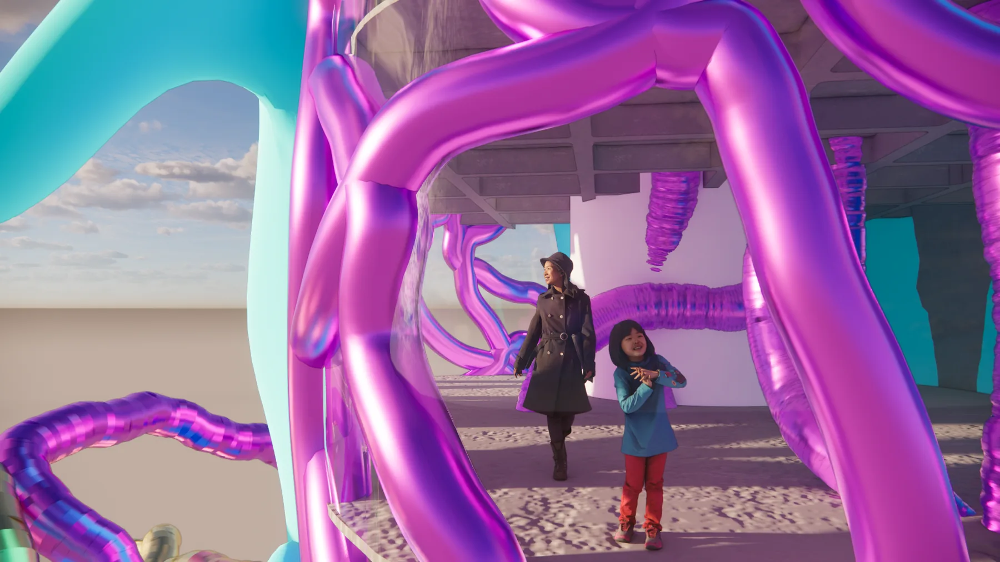
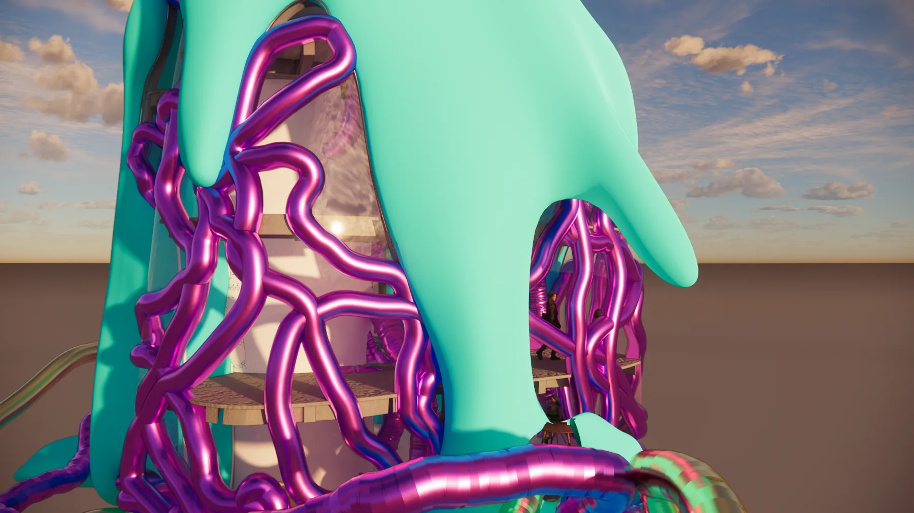
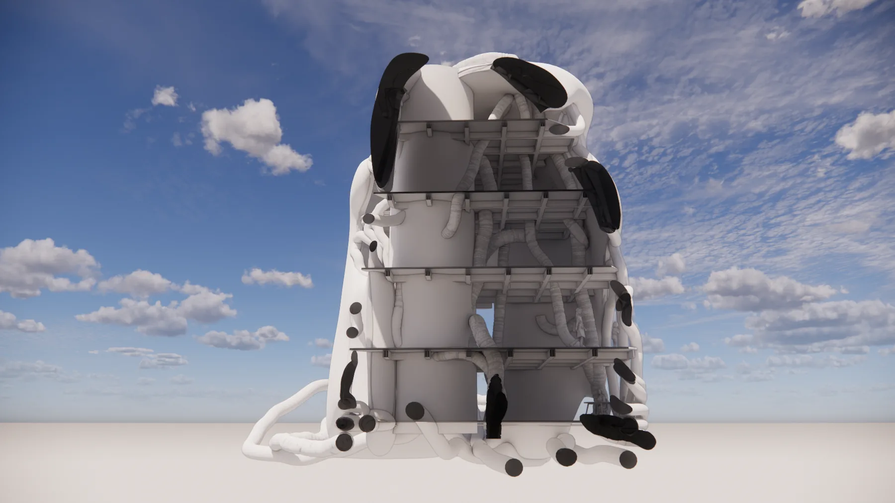

Artificial Context
2026AI-assisted generative massing tested against existing urban fabric.
- Type
- Graduate design studio
- Role
- Group project
- Tools
- Rhino · Grasshopper · AI Form-Finding
- Status
- [STATUS — Brad to confirm: current phase]

01 / Process
Method
[METHOD — Brad to add: 2–3 sentences on the AI-assisted generative process — what tool or model was used, what constraints were set, and what the algorithm produced versus what you curated.]





02 / Outcome
Result
[RESULT — Brad to add: 2–3 sentences on what the study demonstrated and how it tested the AI-assisted massing against the surrounding urban fabric.]
